Спорт
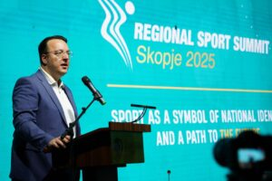
Ристовски: Спортот е двигател на здраво и просперитетно општество
Вицепремиерот и министер за транспорт, Александар Николоски, во денешното обраќање на „Регионален спортски самит Скопје 2025“ најави уште поголеми...
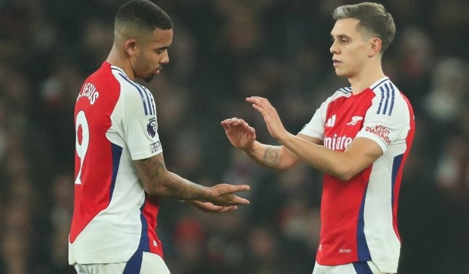
Жезус и Тросар ќе го напуштат Арсенал
Двајца играчи на Арсенал, Бразилецот Габриел Жесус (28) и Белгиецот Леандро Тросард (30), ќе бидат на трансфер листата во зимскиот преоден рок, об...
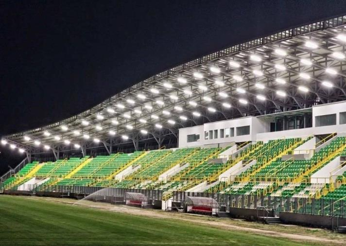
Во Битола по пауза од 31 година попладне ќе се игра меѓународен фудбалски натпревар
Попладне во Битола, по пауза од 31 година, повторно ќе се одигра меѓународен фудбалски натпревар на кој ќе настапат младинските репрезентации на М...
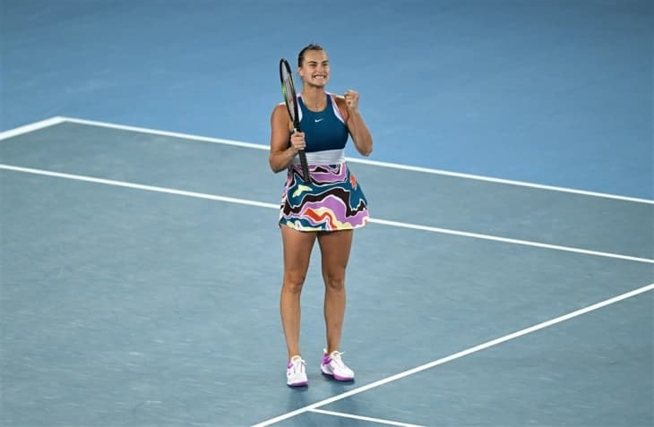
Сабаленка и Анисимова во финалето на УС Опен
Првата носителка, белоруската тенисерка Арина Сабаленка ќе игра против Американката Џесика Пегула. Двата меча ќе се играат ноќта четврток кон пет...
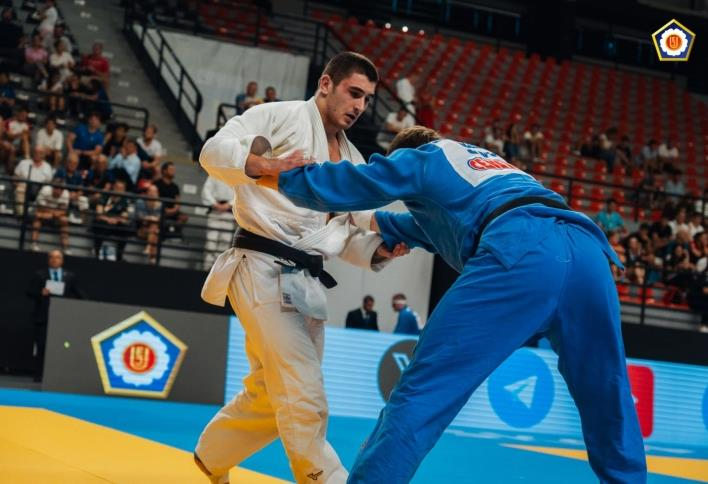
Нов празник на џудото во Скопје
Џудо федерацијата на Македонија со гордост најавува уште еден врвен спортски настан во нејзина организација – Сениорскиот Европски куп во џудо, ко...
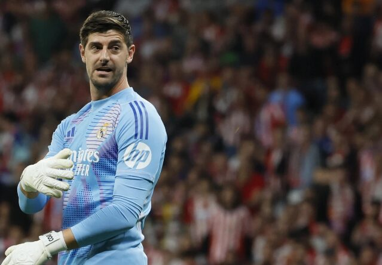
Куртоа си купи ноќен клуб
Според белгиските медиуми, искусниот голман одлучил да го купи ноќниот клуб „Версуз“ во Хаселт, на северот од Белгија. Тибо Куртоа одлучи да разв...
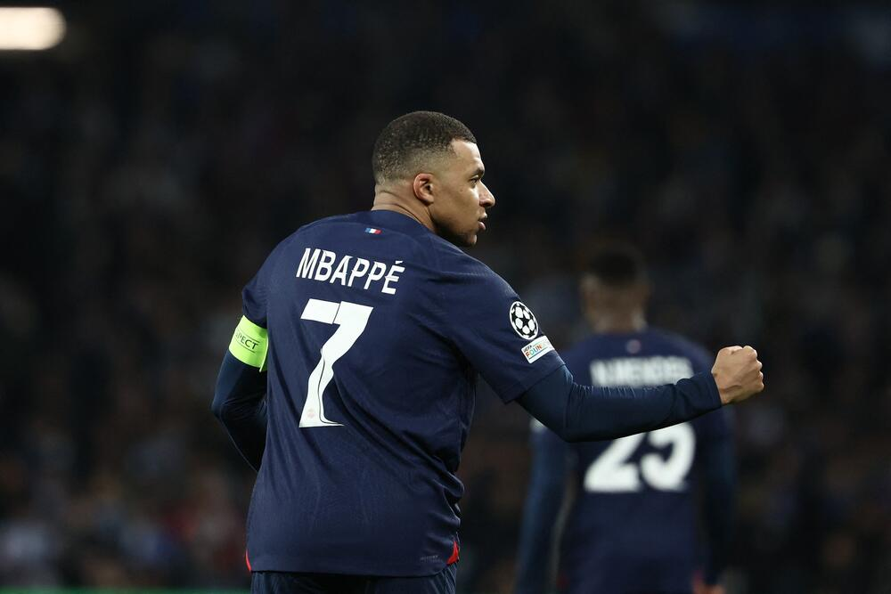
Мбапе: Многу сум среќен што го надминав достигнувањето на Анри но сепак имам уште една личност што треба да ја престигнам
Капитенот на Франција, Килијан Мбапе, по натпреварот против Исланд (2:1) во квалификацискиот турнир за Светското првенство во 2026 година, истакна...
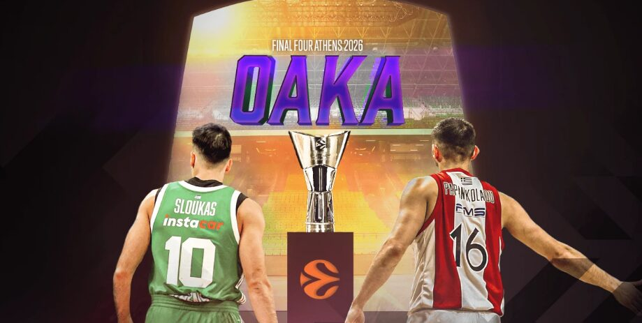
Евролигата донесе одлука, Ф4 ќе се игра во Атина
Екипите од Евролигата одлучија завршниот турнир во 2026 година да се одржи во Атина, објавуваат грчките медиуми. На крајот, беше донесена одлука ...

НБА: Гиди уште четири години во Чикаго за 100 милиони долари
Австралискиот бек Џош Гиди ќе остане во Чикаго Булс, франшизата со него потпиша четиригодишен договор вреден 100 милиони долари. Гиди имаше најдо...
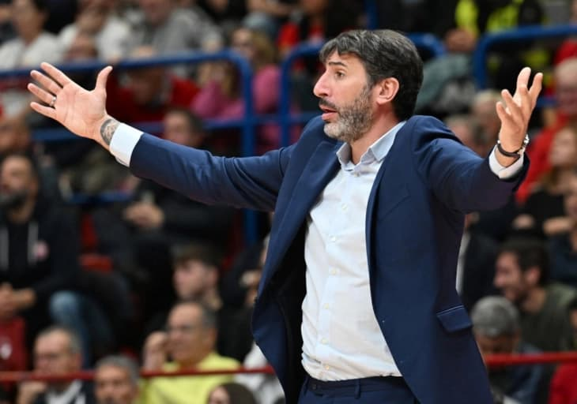
Евробаскет 2025: Германија остана без селекторот
Шпанецот Алекс Мумбру имаше проблеми пред почетокот на првенството кога беше примен во болница. Изминативе денови увидов дека физички не сум подг...
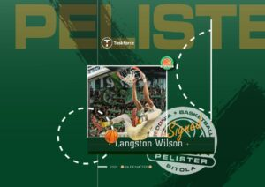
Уште едно ново американско засилување во КК Пелистер
Со ангажманот на Ленгстон Вилсон е комплетиран и последниот странски трансфер на Пелистер летово, откако претходно беа потпишани договори и со Ник...
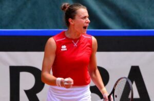
Лина Ѓорческа ќе игра за титулата во романска Слобозија
Македонската тенисерка Лина Ѓорческа имаше успешен старт на ИТФ турнирот во Слобозија, Романија. Во следното коло Ѓорческа ќе игра против уште ед...
Дали Мицкоски ќе го разреши Фетаи – прашува СДСМ откако вицепремиерот одби да одговори новинарски прашања на македонски јазик
Ќе го разреши ли Мицкоски вицепремиерот Фетаи поради непочитување на македонскиот јазик? ВМРО ДПМНЕ и Мицкоски на сето ова се прават глуви и слеп...
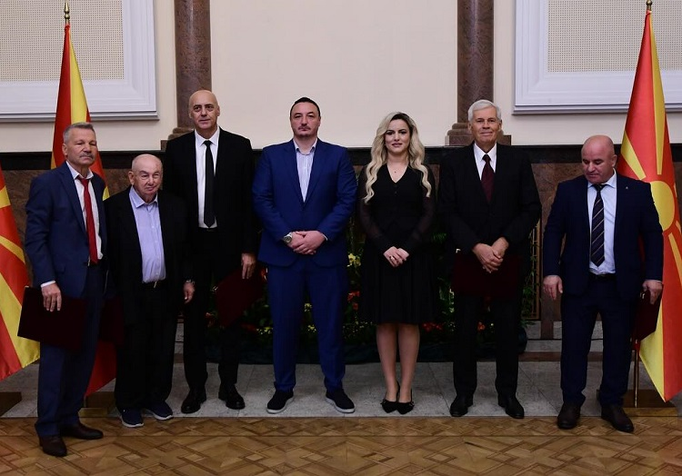
ОДБОЈКАРОТ ЈОШКО МИЛЕНКОСКИ ДОБИ „8 СЕПТЕМВРИ“ ЗА ЖИВОТНО ДЕЛО Признанија и за Хамид Бакија, Зоран Николовски, Виктор Тевчев и Кирил Манев
На 5 септември (петок), во Кристалната сала на Собранието, во 10 часот, Одборот за доделување на државната награда „8 Септември“ ќе врачи награди ...

Алкалоид го доби пехарот за триумфот во ЕХФ Европскиот куп
Натпреварот меѓу Алкалоид и Хановер се игра во сабота од 19:30 часот во салата „Автокоманда“, а ќе биде посебен момент за македонскиот тим затоа ш...
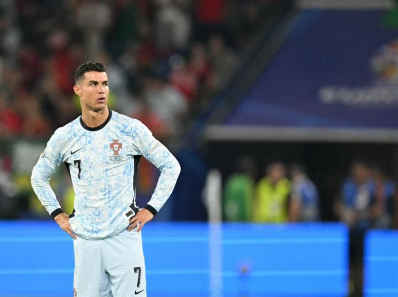
Мартинез: Роналдо дава сѐ од себе, но нема долгорочни цели
Мартинез: Роналдо дава сѐ од себе, но нема долгорочни цели :. Селекторот на Португалија, Роберто Мартинез, одговори на прашање за шансите Кристиј...
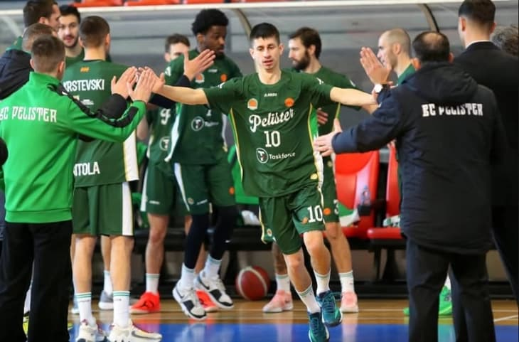
КК Пелистер ги продолжи договорите со четири македонски играчи
За Крстевски ова ќе биде втора сезона во дресот на Пелистер, додека битолчанецот Најдовски како капитен е дел од самите почетоци на овој проект. ...
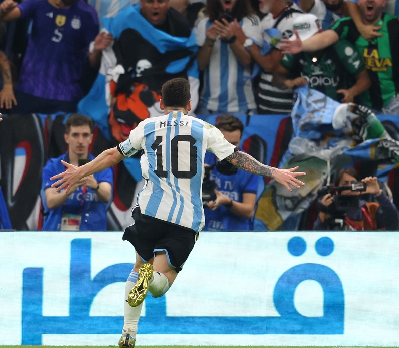
Меси за прв пат во кариерата стана најдобар стрелец во квалификациски циклус за Светското првенство
Триесет и осумгодишниот напаѓач постигна осум гола и имаше три асистенции во 12 натпревари од квалификацискиот турнир за Светското првенство 2026 ...
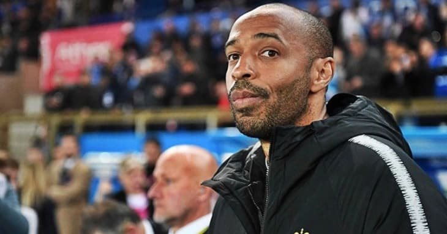
Анри: Сите знаат кој ќе биде новиот француски селектор
Анри: Сите знаат кој ќе биде новиот француски селектор » :. Поранешниот француски фудбалски репрезентативец Тиери Анри нема сомнежи дека Зинедин ...
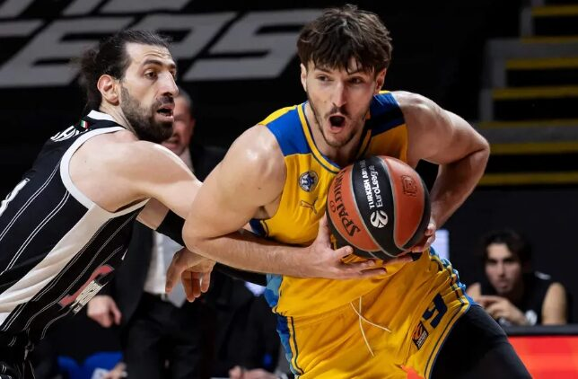
Центарот на Макаби се сели во НБА?
Соркин импресионираше на Евробаскетот за Израел, со просек од 16,5 поени и 6 скока по натпревар. Кошаркарот на Макаби Тел Авив, Роман Соркин, би ...
(Видео) Боливија го победи Бразил ќе игра бараж за СП, Луис Суарез ја декласира Венецуела
Репрезентациите на Аргентина, Бразил, Еквадор, Колумбија, Парагвај и Уругвај обезбедија пласман на Мундијалот следната година, а во плејофот ќе иг...
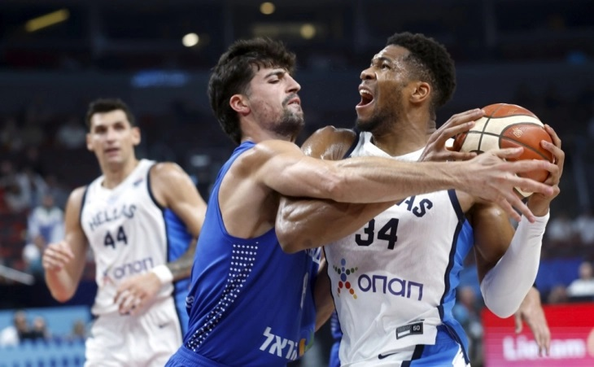
Евробаскет 2025: Дончиќ ја однесе Словенија во четвртфиналето
Евробаскет 2025: Грција последен четвртфиналист » :. Рига– Репрезентацијата на Грција е последната која избори четвртфинале на Евробаскетот откак...
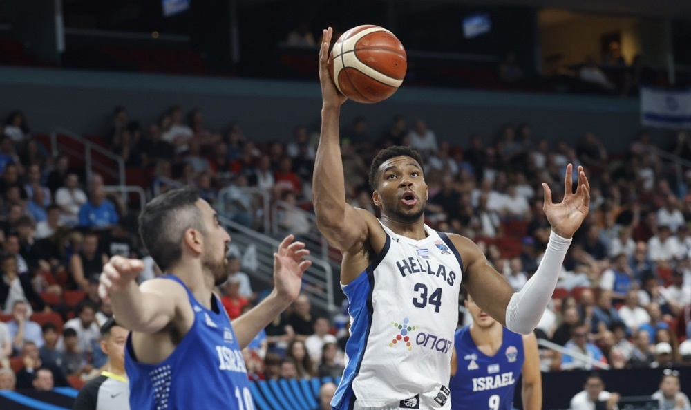
ФИБА ги објави термините за четвртфиналните пресметки
ФИБА ги објави четвртфиналните натпревари на Евробаскетот, натпреварите ќе се играат во вторник и среда. За разлика од натпреварите од осминафина...
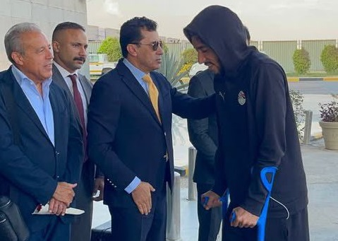
Проблем за Гвардиола – Мармуш се повреди играјќи за Египет
Лоши вести пристигнаа на „Етихад“ од Африка бидејќи Омар Мармуш ги повреди лигаментите на коленото. Како што стојат работите сега, Мармуш ќе го п...
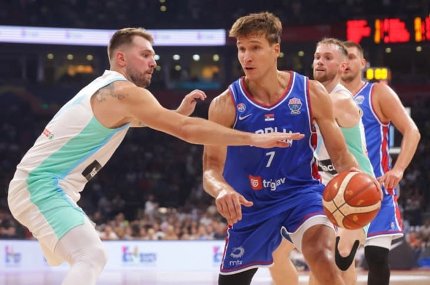
Србија остана без Богдановиќ до крајот на Евробаскетот
Капитенот на српската репрезентација, Богдан Богдановиќ, нема да игра во продолжението на Европското првенство поради повреда на тетивата што ја з...
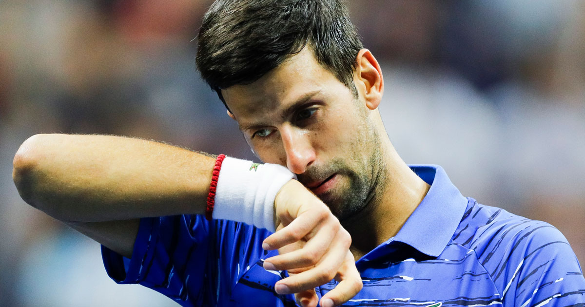
ЃОКОВИЌ ЈА НАПУШТА СРБИЈА И СЕ СЕЛИ ВО ГРЦИЈА Децата веќе ги запишал на училиште во Атина
Новак Ѓоковиќ ги запишал своите деца во приватно училиште во Грција, а неговото семејство започнува нов живот во оваа земја, по извештаите дека би...
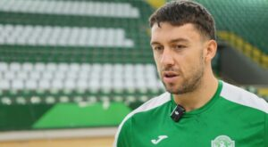
Битола ќе гори, почнува Лигата на шампионите
Не треба да зборуваме за историјата на Загреб, мотивирани сме и сакаме со позитивен резултат да ја почнеме Лигата на шампионите. Максимално се по...
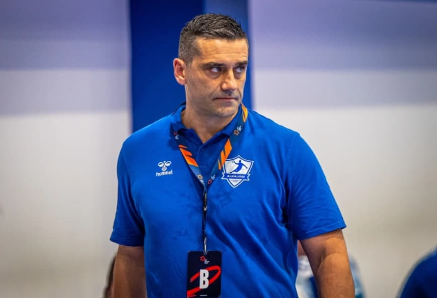
Лазаров: Разочаран сум, невозможно е да се совлада екипа од Бундеслигата со таква статистика
Сакам да им честитам на Хановер за победата и да им посакам среќа во групната фаза на ЕХФ Европската лига. Хановер е противник кој победува екипи...
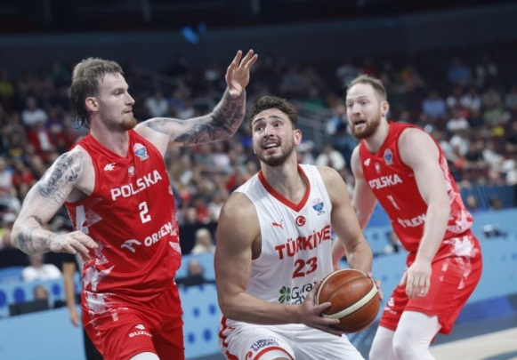
Евробаскет 2025: Турција прв полуфиналист
Најдобар играч на Турција беше Алперен Шенгун, кој оствари „трипл дабл“ учинок со 19 поени, 12 скока и 10 асистенции. Евробаскет: Турција во полу...
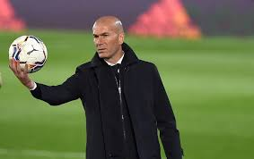
ЗИДАН СПРЕМЕН ЗА НАЈГОЛЕМИОТ ПРЕДИЗВИК Франција добива нов селектор по Светското во 2026
Претходно, Дидие Дешам изјави дека Светското првенство во 2026 година ќе биде неговиот последен турнир на чело на репрезентацијата. Според , 53 г...
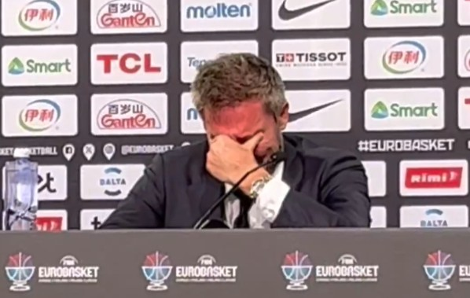
Евробаскет 2025: Селекторот на Италија поднесе оставка
Евробаскет 2025: Селекторот на Италија поднесе оставка » :. Рига – По елиминацијата на Италија од Евробаскетот селекторот Џанмарко Поцеко поднесе...
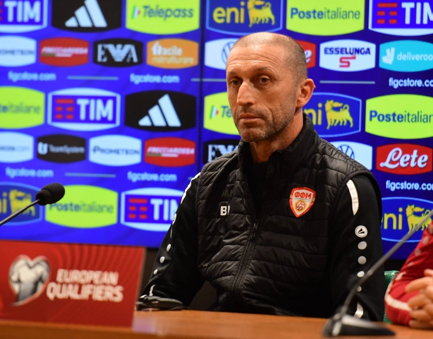
Милевски: За фудбалерите – секоја чест!
Следниот натпревар со Белгија е за нас најважен, подготовката кај нас секогаш е иста без оглед дали противник е Лихтенштајн, Белгија или Казахстан...
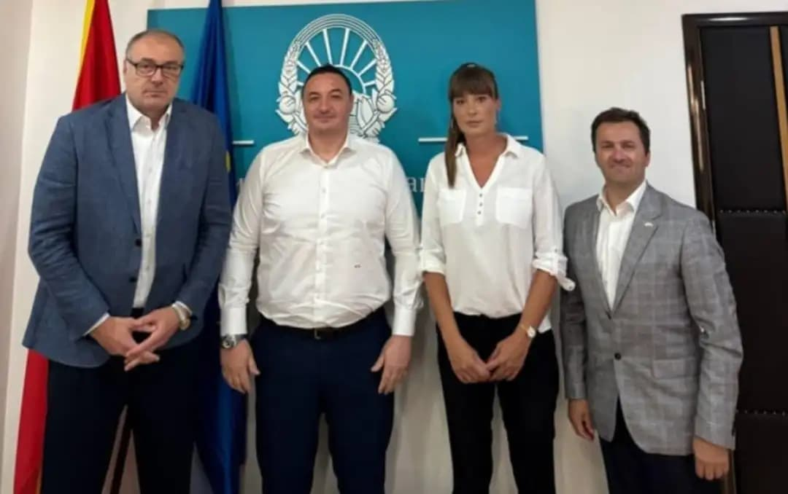
Македонија домаќин на Светско училишно првенство во ракомет 2026
Договорот за организација на првенството беше официјално потпишан од страна на министерот за спорт Борко Ристовски, претседателката на Федерацијат...
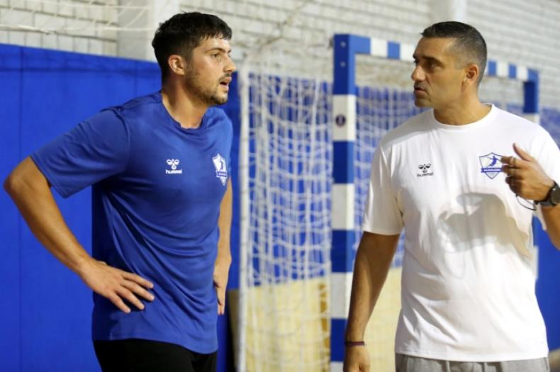
Ѓорѓовски: Се трудам да го дадам максимумот на секој тренинг
Но, секогаш има и по некое изненадување плус, не смее да се потцени ниту еден тим, изјави Ѓорѓовски Алкалоид веќе неколку дена е на базични подгот...
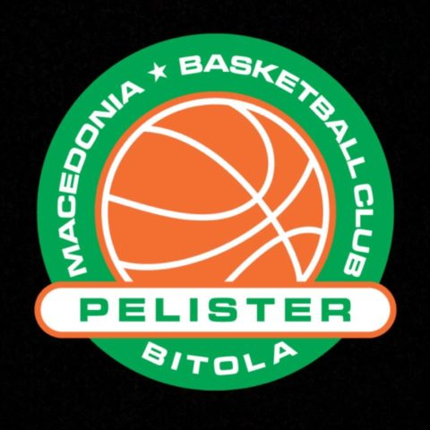
Уште едно ново американско засилување во КК Пелистер
Токму Американецот беше најдобар кошаркар на Кожув ланската сезона,што беше најдобра препорака за управата на „пелистерци“ да го ангажира. Вилсон...
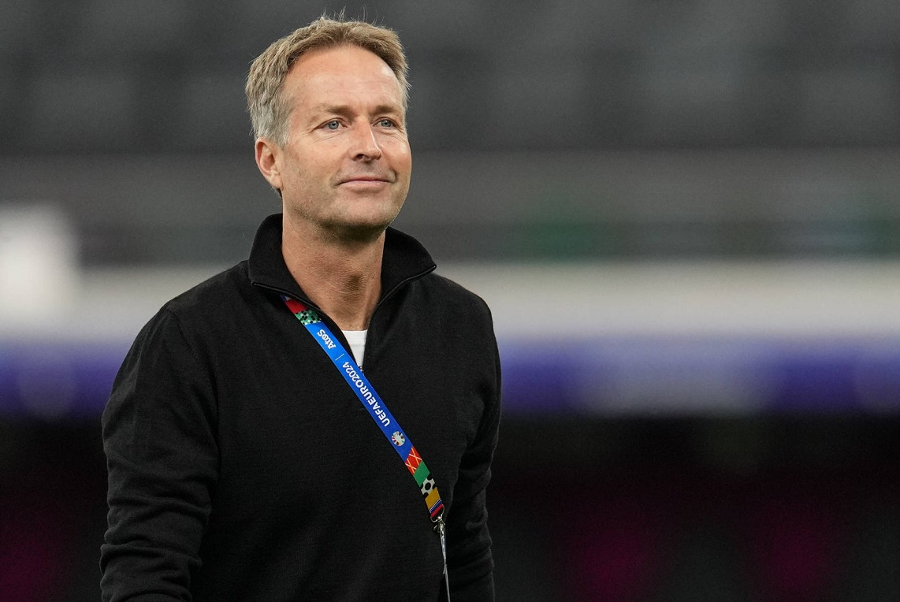
Поранешниот селектор на Данска го презеде Баер Леверкузен
Каспер Хјулманд, поранешен селектор на Данска, кој ја напушти репрезентацијата во јули минатата година по Европското првенство дојде на местото на...
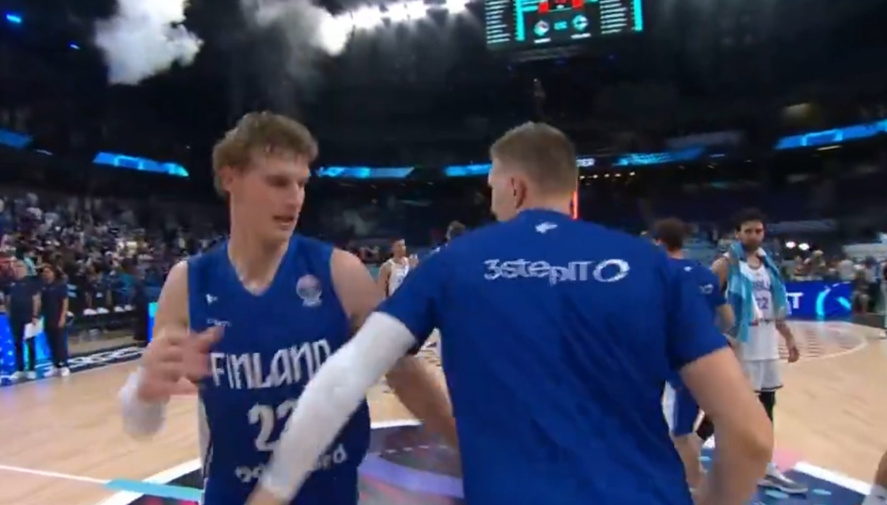
ФИБА: Испаѓањето на Србија е изненадување на векот
Финска ги исфрли Србија и Никола Јокиќ од Евробаскетот!“ Сензацијата е главна тема во светот на кошарката. ФИБА, светската кошаркарска федерација...
Џек Дрејпер се повреди,сезоната за него е завршена
Во еден момент Дрејпер беше четврти на АТП листата, но неодамна доживеа пад, токму поради повредата. Британскиот тенисер Џек Дрејпер ја заврши се...
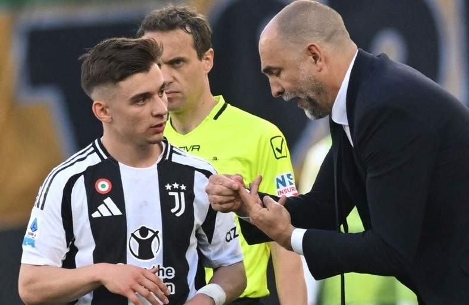
Јувентус остана без важен играч за дербито против Интер
Консеисао, фудбалер кој во кариерата одиграл 11 репрезентативни натпревари и постигнал два гола, веднаш заминал за Торино и ќе направи дополнителн...
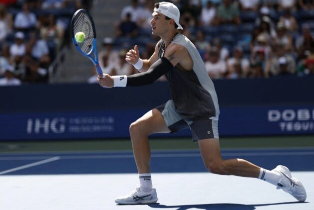
Заврши сезоната за Џек Дрејпер
Британскиот тенисер Џек Дрејпер ја заврши сезоната поради повреда на левата рака. Заедно со овогодинешниот Индијан Велс, Дрејпер славеше и во Вие...

Алекс падна, Марк најбрз во спринтот во Каталуња
МотоГП: Алекс Маркез обезбеди пол позиција за Големата награда на Каталонија. Возачот на Дукати, Марк Маркез ја освои Големата награда на Унгариј...
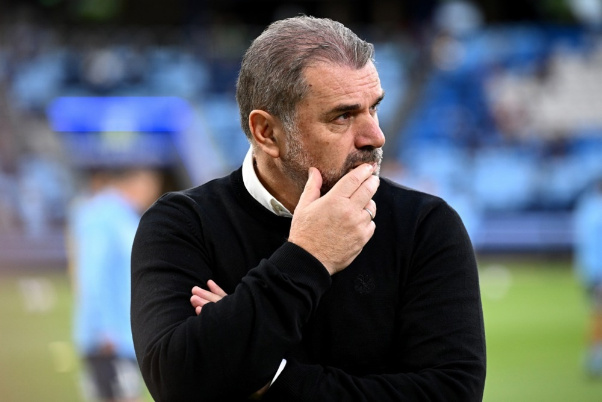
Постекоглу пред портите на „Сити Граунд“ во Нотингем
Новиот менаџер на Форест ќе биде Грк од Австралија, Ангелос Постекоглу, кој беше менаџер на Селтик две сезони, а потоа и на Тотенхем две сезони. ...

(Видео) Фудбалерите од земја со помалку од 600.000 жители пред историски пласман на СП
Зеленортските острови (Капе Верде) го победи Камерун со 1:0 и се искачи на челната позација во групата Д од квалификациите за Светското првенство....
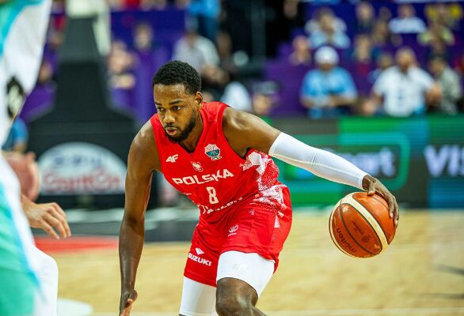
Трансферот на Лојд во Реал зависи од Монако и Валенсија
За да биде реализиран трансферот, Реал покрај со Монако, ќе треба да се договори и со поранешниот клуб на Лојд, Валенсија. Лојд и „кралскиот клуб...
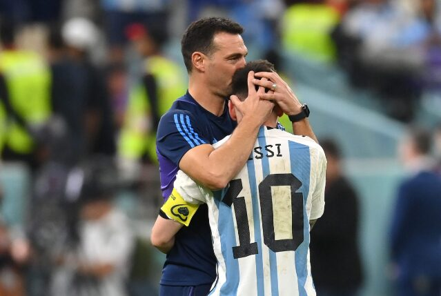
Скалони: Каква и да биде одлуката на Меси, ние ќе ја почитуваме
Кои се шансите Меси да игра на Светското првенство? Лионел Меси, најголемиот фудбалски син на нацијата, по натпреварот со Венецуела пред некој де...

Лазаров пред реваншот со Хановер: Достоинствено да го презентираме македонскиот ракомет
Во сабота е убав ден, затоа што ќе го подигнеме европскиот пехар кој го освоивме лани со македонски тим, кој постои три години во Суперлигата и уш...
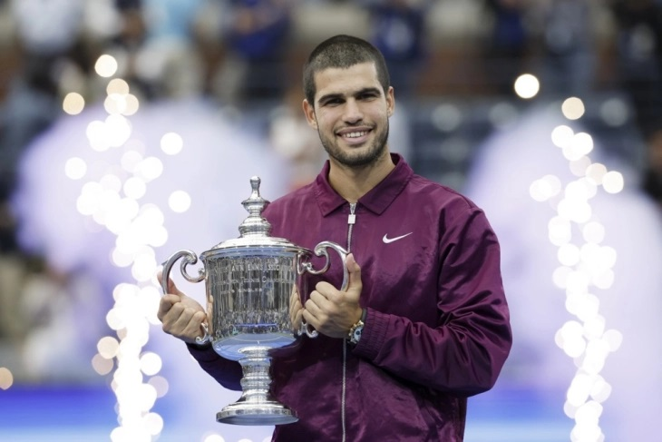
Алкараз шампион на УС опен и нов број 1 на светот
Шпанецот Карлос Алкараз е победник на годинашниов УС опен откако во финалето го совлада Јаник Синер од Италија со 3:1 во сетови (6:2 3:6 6:1 и 6:4...
Расел Вестбрук се сели во Кина?
Иако беше споменат интересот на Сакраменто, Далас и Голден стејт, ниту еден од овие тимови не направи конкретен потег. Токму оваа неодлучност му ...
Teжок ќе биде патот на Србија до финалето на ЕП
Осминафиналните пресметки на Евробаскетот ќе стартуваат в сабота кога на програмата се дуелите Србија Финска, Германија Португалија, Литванија Лет...
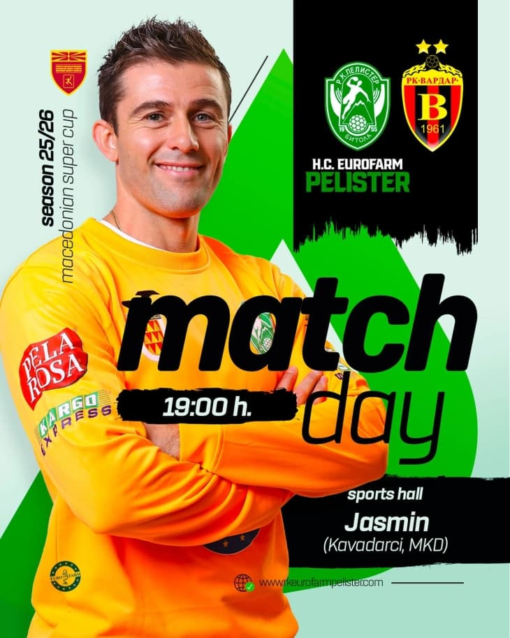
Со Суперкупот во Кавадарци се отвора новата сезона во македонскиот ракомет
Во претсезонските натпревари, вечните ривали се сретнаа два пати, и во двата наврата победија битолчани па поради подобрата форма влегуваат како ф...

Ферстапен ја освои Монца пред возачите на Мекларен
Подиумот го пополнија возачите на Мекларен, Британецот Ландо Норис ја помина целта втор, а Австралиецот Оскар Пјастри трет. Холанѓанецот Макс Фер...
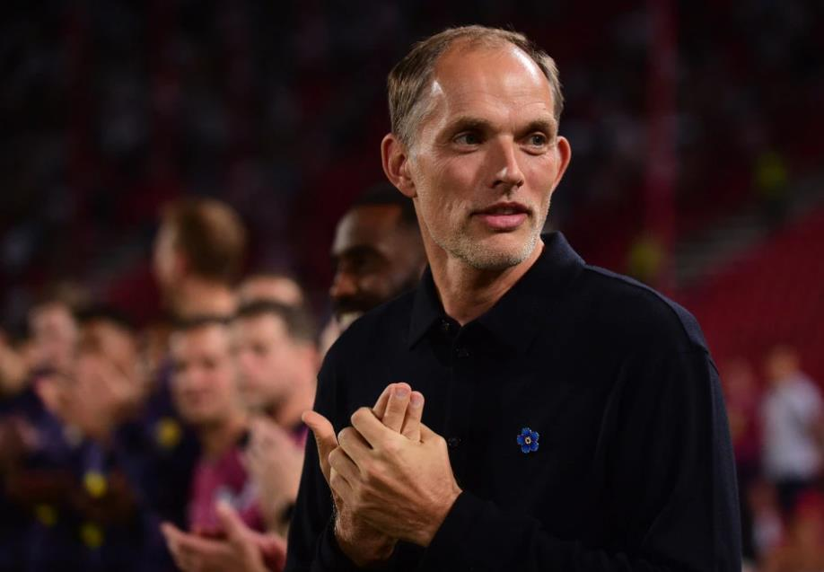
Тухел по триумфот над Србија: Ова е чисто тимска победа
Англија има 15 бода и е лидер во Групата К. Србија е на третото место со седум бода. Мислам дека не ѝ дозволивме на Србија да упати ниту еден уда...
Лазаров: Невозможно е да победиш бундеслигаш со девет промашени седмерци
Јас сум разочаран, затоа што промашивме девет пенали во двата меча, а со такво нешто е невозможно да победиш тим кој долго беше лидер во Бундеслиг...
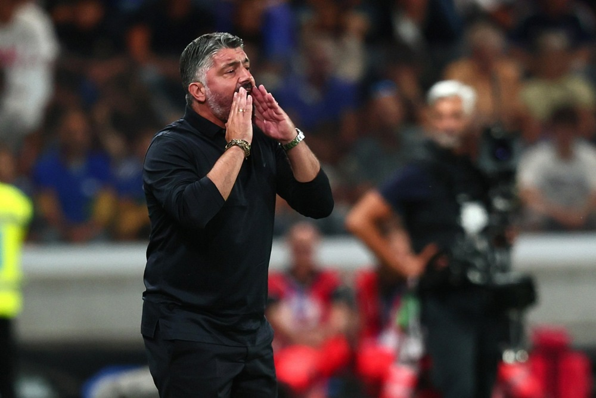
Гатузо: Хаос, најлуд натпревар во кој некогаш сум учествувал
Џенаро Гатузо, селекторот на Италија, се осврна на натпреварот по лудиот триумф на неговите избраници. Аѕурите, во луд натпревар, во Дебрецен, сл...
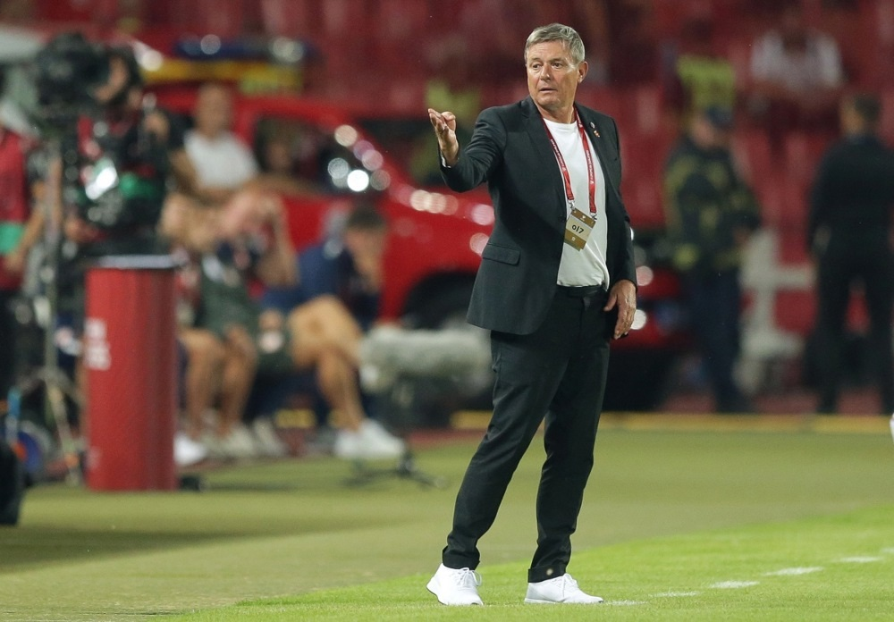
„Изјавата на Пикси не е достојна за селектор на репрезентација“
Како селектор, тој (Пикси) не создаде систем на игра, не избра група играчи кои постојано ќе играат за него. Потоа додаде: „Има и луѓе од Шпанија...
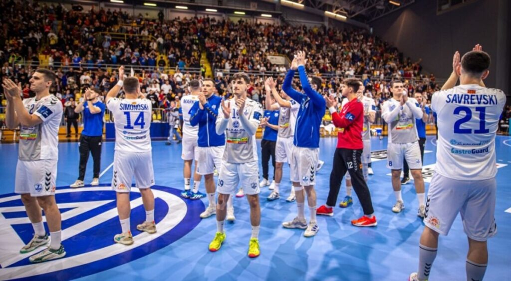
ЕХФ: Алкалоид службено го освои Европскиот куп, регистриран е неодиграниот реванш со 10-0
Европската ракометна федерација (ЕХФ) денеска ја објави конечната и официјална одлука околу неодиграниот реванш натпревар од финалето на Европскио...
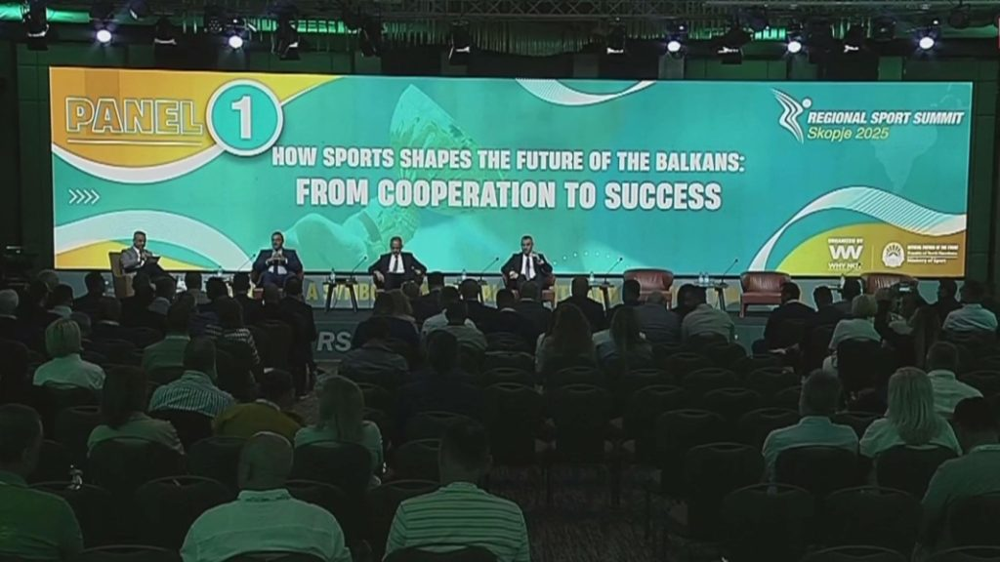
Борко Ристовски: Спортот е моќна сила што ги обединува општествата и ја гради иднината
Борко Ристовски: Спортот е моќна сила што ги обединува општествата и ја гради иднината. На отворањето на Самитот воведно обраќање имаше министеро...
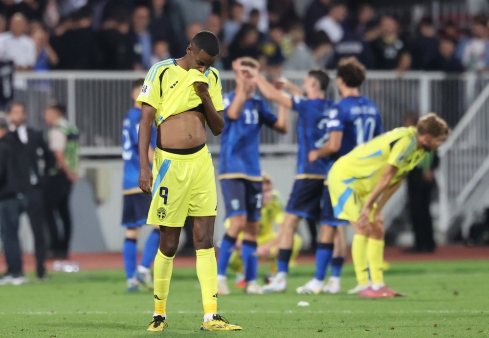
Исак за трансферот во Ливерпул: Не знате што сè се случуваше
Фудбалерот на Ливерпул, Александар Исак, изјави дека е среќен што го засилил шампионот на Англија по долгата сага, но дека медиумите и навивачите ...
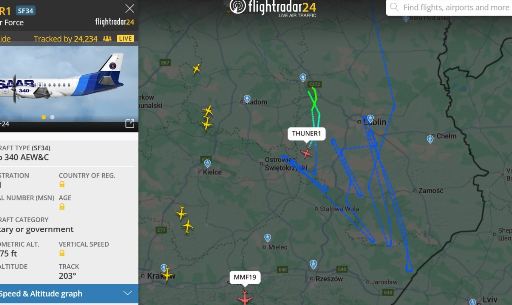
Полска ги крена своите авиони и собори руски дронови: Oперацијата е во тек, испратено предупредување до граѓаните
Полска употреби оружје за да собори дронови над својата територија, откако тие повеќепати навлегле во нејзиниот воздушен простор за време на руски...
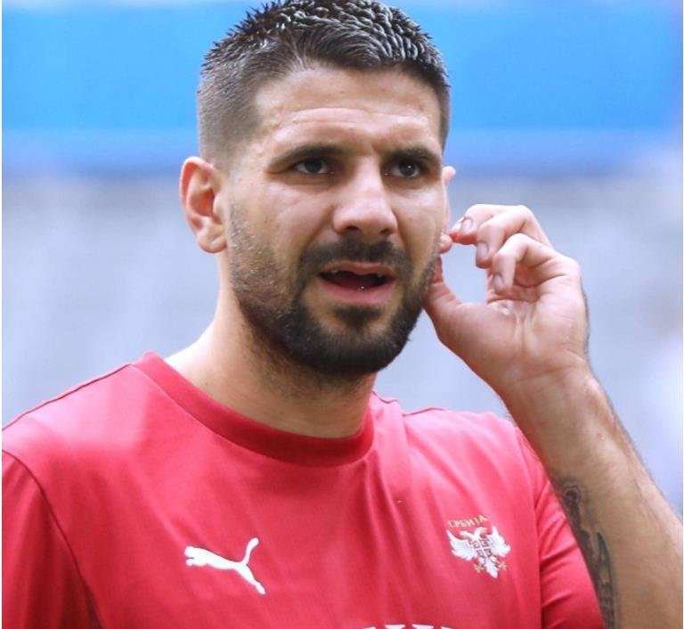
„Митрогол“ разочаран од поразот од Англија
Англија со 15 бода е лидер во Групата К. Србија е на третото место со седум бода. Англија заслужи да победи, изјави Митровиќ за официјалниот веб ...
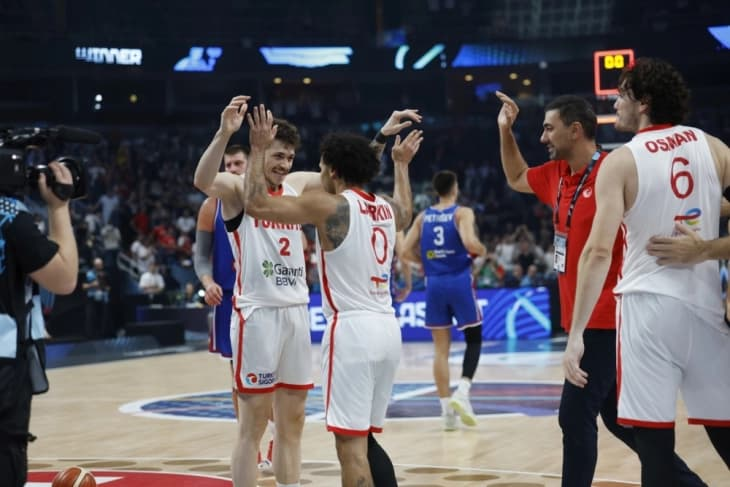
Падна митот за непобедливата Србија
Пласман помеѓу 16 те најдобри на Евробаскетот од оваа група изборија и ко домаќинот Летонија, како и Португалија. Другите осум учесници во 18фина...
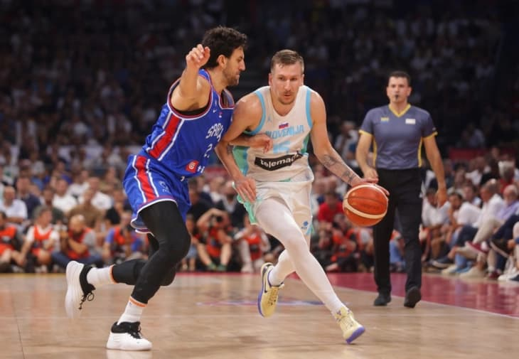
Почнува ЕП во кошарка, Србија главен фаворит
Покрај Тампере, градови и земји домаќини се: Рига (Летонија), Лимасол (Кипар) и Катовице (Полска). На турнирот учествуваат 24 национални селекции...
Бајру си замина, улиците во Франција “експлодираа“: Влегува ли земјата во вонредна состојба?/ВИДЕО
Премиерот Франсоа Бајру поднесе оставка по жестоките реакции на најавените мерки за штедење, кои вклучуваат намалување на социјалните трошоци. Пр...
ЖРК Ѓорче Петров го победи ЖРК Куманово
Ракометарките на ЖРК Куманово со сигурна игра во второто полувреме славеа над ЖРК Куманово со 31 21 во првото коло од женската Супер Лига. На пау...
ДРИСЛА И ПОНАТАМУ ГОРИ - активни пожари има на повеќе локации
Активни пожари има на депонијата Дрисла во општина Студеничани, кај село Никуштак во општина Липково, село Булачани во општина Гази Баба и кај сел...

Вечерва ракометно дерби Пелистер-Вардар
Охрид во последното коло од групната фаза се среќава со Нексе и доколку забележи победа ќе игра во големото финале што на програмата е во сабота. ...
Данев: Респект за Италија, но одлучни сме дека одиме на триумф
Македонската фудбалска репрезентација до 21 година на стадионот „Билјанини извори“ во Охрид го одработи последниот тренинг пред утрешниот квалифик...
Од Тотенхем порачаа: Клубот не е на продажба!
Главниот извршен директор на Тотенхем, Винаи Венкатешам, ја нагласи страста, амбицијата и „непоколебливата поддршка“ од семејството Луис додека кл...

Хамилтон: Ферари се движи во вистинската насока
Тој возеше за Ферари во сезоната 1992 (која вклучуваше 14 етапи) без ниту еден подиум. Британецот е во серија од 15 трки за Ферари без подиум, шт...
Реми на Алкалоид и Охрид во „Автокоманда“!
Гостите за прв пат се непоразени во домот на Алкалоид, во 13 одиграни меѓусебни средби. Алкалоид и ГРК приредија атрактивен дуел кој ја исполни п...
„Шумарите“ го отпуштија Нуно Еспирито Санто
Нуно Еспирито Санто повеќе не е менаџер на Нотингем Форест. Хаос во Нотингем: Нуно Еспирито Санто доби отказ откако го однесе тимот во Европа. В...
Одличниот Алкараз го победи Синер за триумф на Отворено првенство на САД:
Алкараз ги освои Ролан Гарос и Отвореното првенство на САД, а Синер славеше на Отвореното првенство на Австралија и Вимблдон. Карлос Алкараз е ша...
Кевин Лав потпишува за Денвер
Екипата на Денвер Нагетс и нивната прва ѕвезда, Никола Јокиќ, би можеле да добијат уште едно звучно засилување по Јонас Валанчиунас. Станува збор...
Евробаскет 2025: Германија остана без селекторот
Многу репрезентации за време на шампионатите најчесто имаат проблем со повреди на играчите, но германската кошаркарска репрезентација на Евробаске...
Мбапе гласа за Дембеле: Јас лично би му ја врачи Златната топка
Усман ја заслужува (Златната топка), го поддржував од самиот почеток. Ако ме прашаше, јас лично би му ја однел дома“, изјави тој Мбапе за „Телефу...
Удар за Билбао: Алварез суспендиран поради допинг
Поради допинг, Алварез доби девет месечна суспензија, што значи дека практично сезоната за него заврши. Удар за Билбао: Алварез суспендиран порад...
Ф1: Пјастри ја освои ГН на Холандија
На девет трки до крајот, Пјастри ја зголеми својата предност во генералниот пласман и сега води со 309 поени, 34 повеќе од Норис, додека Верстапен...

Сабаленка ја одбрани титулата на УС Опен
Сабаленка ја потврди доминацијата и го доби тај брејкот со 7:3 на поени и притоа има изгубено само еден тај брејк во 2025 година од 22 одиграни. ...
Зеленски одговори на поканата на Путин: Не можам да дојдам во Москва, ти дојди во Киев
ТОЈ МОЖЕ ДА ДОЈДЕ ВО КИЕВ“ Зеленски ја отфрли идејата на Путин за средба во Москва. НЕКА ДОЈДЕ ВО КИЕВ, ЈАС НЕ ОДАМ ВО МОСКВА: Зеленски го одби п...
Алекс конечно го победи постариот брат во главна трка
Третата позиција ја освои звонредниот Бастијанини, кој стартуваше од деветтото место, а на крајот заврши на подиумот. Возачот на Гресини ја освои...
Тухел постави ТОП рекорд како селектор на Англија
Томас Тухел е очигледно правиот човек за водење на репрезентацијата на Англија. Синоќа „Гордиот Албион“ среде Белград го размонтира националниот ...
Реал Мадрид повторно ќе го бојкотира доделувањето на Златната топка
Фудбалскиот клуб Реал Мадрид и оваа година ќе ја бојкотира церемонијата на доделувањето на најпрестижната индивидуална награда во фудбалот, Златна...
МАРАТОНЦИТЕ КАЈ ПРЕТСЕДАТЕЛКАТА: Сиљановска им ги додели наградите на победниците на Охридскиот пливачки маратон
Гордана Сиљановска Давкова награди маратон Сиљановска Давкова им честитала на победниците и на сите учесници на маратонот, изразувајќи им признани...
Поплавена Риека, водата навлегува во дуќаните
Поплавена Риека, водата навлегува во дуќаните » :. Обилниот дожд што падна во Риека ги поплави улиците денес околу 13 часот. Директорот на Хидро...
Милевски: Имаме максимален респект за Лихтенштајн
Македонската фудбалска репрезентација утре од 18 часот на Националната арена Тодор Проески во Скопје го игра квалификацискиот натпревар од групата...
КК Пелистер ги продолжи договорите со четири македонски играчи
За Крстевски ова ќе биде втора сезона во дресот на Пелистер, додека битолчанецот Најдовски како капитен е дел од самите почетоци на овој проект. ...
Германија среде Евробаскетот остана без селектор
Германија ќе игра против Словенија во четвртфиналето на Евробаскетот во среда од 20 часот. Во текот на изминатите неколку дена сфатив дека не сум...
Евробаскет: Историско полуфинале за Финска
Финска до победата ја предводеа Микаел Јантунен со 19 поени и пет скокови, Лаури Марканен со 17 поени, шест скокови и две асистенции и Едон Маџуни...
Албанија гази кон ЕУ, ги отвора последните две преговарачки поглавја
На 2 септември, Албанија ја поднесе својата преговарачка позиција за следното групно поглавје, додека сега е официјално потврдено дека следната ме...
Крај на една ера: По 23 години, Даниел Леви повеќе не е прв човек на Тотенхем!
Даниел Леви човекот кој повеќе од две децении беше синоним за Тотенхем, повеќе не е на чело на клубот. Крај на една ера: По 23 години, Даниел Лев...
Виландер: Синер е шампион, а Алкараз е суперѕвезда
И двајцата тенисери годинава ја завршија со по два освоени Грен слем турнира, Алкараз (Ролан Гарос и УС опен), Синер (Австралија опен и Вимблдон)....
Фенербахче ќе го предводи Џовани Тедеско
После тоа, тој стана најмладиот тренер во историјата на Спартак Москва. Стана најмладиот тренер во историјата на Шалке 04, со кого стигна до осми...
Арка-Борец балкански шампион во кајак на диви води
Со овој успех велешкиот клуб уште еднаш потврди дека е лидер во регионот, а младите таленти од ККК Арка Борец се иднината на македонскиот кајак, и...
Свилар ангажирал тим адвокати за да се врати во репрезентацијата на Белгија
Талентираниот голман, со спрско потекло, Миле Свилар вложува максимални напори за да добие можност да игра за белгиската репрезентација, а во врск...
Сити и Премиер лигата постигнаа договор околу договорите за спонзорство
Манчестер Сити и Премиер лигата постигнаа договор во спорот околу правилата што ги регулираат договорите за спонзорство. Сити покрена правна пост...
Ѓорческа стартуваше со победа на турнирот во Романија
Ѓорческа одигра меч кој траеше речиси три часа, Македонката го доби првиот сет со 6 4, а на ист таков начин возврати Романката за. Најдобрата мак...
ОПШТИНАТА ИНФОРМИРА ДЕКА СТАДИОНОТ Е ПОДГОТВЕН ЗА ГОЛЕМ ДУЕЛ
Општина Битола и Фудбалската федерација на Македонија професионално и во потребните рокови го завршија процесот на реновирање и приспособување на ...
Еклстоун го критикува Мекларен за размена на позициите на Пјастри и Норис на ГН на Италија
Поранешниот директор на Формула 1, Берни Еклстоун, даде свој коментар за наредбата на менаџментот на Мекларен до возачот Оскар Пјастри да му го вр...
„Најскапиот бурек на Балканот“: ТикТокерка сподели рецензија за бурек од Дубровник
Таа го оцени бурекот со сирење со 8 од 10, додека на бурекот со месо му даде 9 од. Го прават на лице место и го печат“, рече Лиза, а потоа го про...
РФМ: Горди сме што Македонија е домаќин на првото издание на Ракометен регионален турнир
Горди сме што Македонија е домаќин на првото издание на Ракометен регионален турнир. На овој турнир во машка конкуренција ќе настапат РК Еурофарм...

Петар и Павле Атанасијевиќ ги продолжија договорите со Еурофарм Пелистер
Петар и Павле Атанасијевиќ ги продолжија договорите со Еурофарм Пелистер :. Браќата близнаци Петар и Павле Атанасијевиќ, кои се на возраст од 22 ...